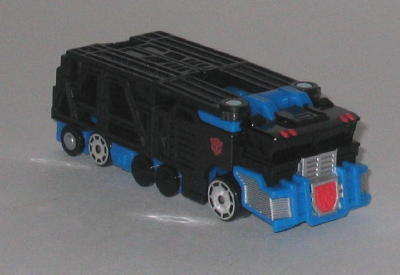
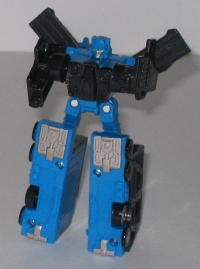
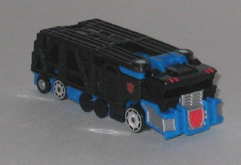
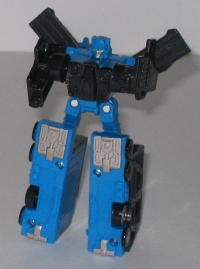
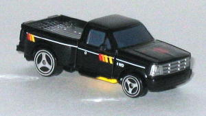
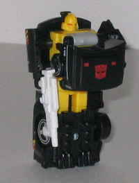

 
Allegiance : Autobot
Size : Basic
Difficulty of Transformation : Very Easy
Color Scheme : Black, blue, and some red, chrome silver, and silver
Rating : 5.8
Price : $6 (U.S.)
 Ultra
Magnus (Basic)
Ultra
Magnus (Basic)


Allegiance
: Autobot
Size
: Basic
Difficulty of Transformation
: Very
Easy
Color Scheme
: Black, blue, and some
red, chrome silver, and silver
Rating
: 5.8
(NOTE: Because this is a repaint, this is not a full-blown review. This mainly covers any changes made to the mold and the color scheme, and merely compares it to the RiD Ultra Magnus Basic. For a review on the mold itself, read the review of the RiD Ultra Magnus Basic here .)
Oh, joy. Another lazy
Universe Exclusive. For this guy, what you do is you take the light gray
parts from the previous version and replace them with black, then replace
the yellow highlights and Autobot symbol with a red one. Nothing else has
changed. Well, except for the WIDE LOAD sticker on the back end, which
is sure to get a few guffaws. I do have to say, I like the black-and-blue
better than the older gray-and-blue, so if this were a first release of
the mold, or if the previous version was completely different, I'd like
the scheme a lot. But it's just too similar to the previous one to make
me go anything more than "meh". But at least it's more different from the
previous version than the Super Universe Magnus was from his previous scheme.
No mold changes have
been made to Basic Universe Ultra Magnus.
 Ironhide
Ironhide


Allegiance
: Autobot
Size
: Spychanger
Difficulty of Transformation
: Very
Easy
Color Scheme
: Off-white, black,
yellow, silver, and some white, red, orange, metallic gray-blue, and chrome
silver
Rating
: 4.8
(NOTE: Because this is a repaint, this is not a full-blown review. This mainly covers any changes made to the mold and the color scheme, and merely compares it to the RiD Ironhide Spychanger. For a review on the mold itself, read the review of the RiD Ironhide Spychanger here .)
Universe Ironhide's vehicle
mode looks pretty cool, and is a pretty big departure from his previous
versions, which is plus when it comes to Universe Exclusives. The black
truck with a silver bed looks really nice, and he has some different paint
decoes, too- a nice line across his sides with some yellow-to-red stripes,
and "4WD" written across the sides in small lettets, too. On his hood are
two red rectangular dots and the standard Autobot symbol. One thing that
rather irks me, though, is that on the rear of this mode is a sticker that
says "ESCORT VEHICAL". Such an obvious mispelling should not have made
it to the final product, and there's absolutely no excuse for it. It's
just more proof that these Universe Exclusives were far too rushed. Another
big indicator is that the actual robot parts- that is, the parts you can't
see from the package- aren't changed at all. They're still the same yellow
and off-white that they were on the RiD version. At least put some EFFORT
into BOTH modes if you're going to repaint something, Hasbro.
No mold changes have
been made to Universe Ironhide.
Both of the toys in this two-pack have pretty good color schemes, if looked at by themselves. But both of them have colors on them on certain parts that are exactly the same as their predecessors, and this they only look like "half-repaints". And they're not really amazing toys, either. Not recommended.
No Stats
Review by Beastbot